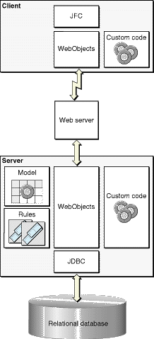

| PATH |

Direct to Java Client applications have the same basic architecture as Java Client applications do. The main difference is the addition of rule files that determine how Direct to Java Client assembles a user interface for your application.
Figure 7-2 The components of a Direct to Java Client application

© 2001 Apple Computer, Inc.